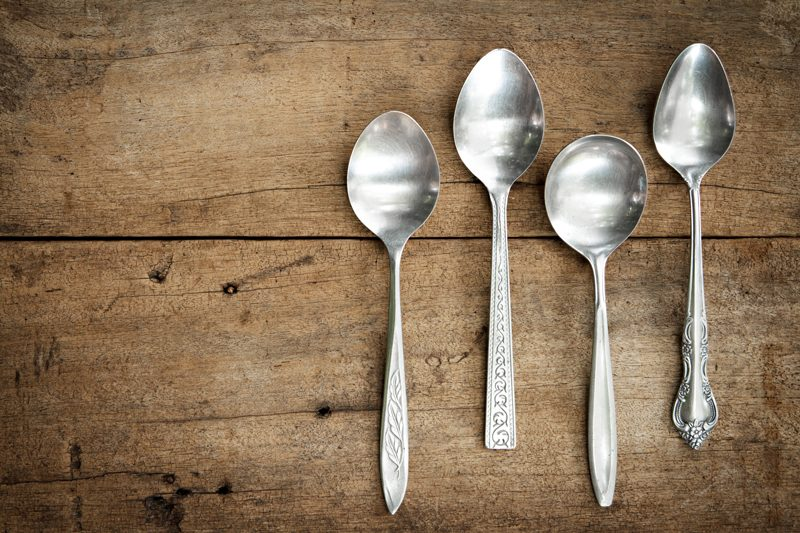
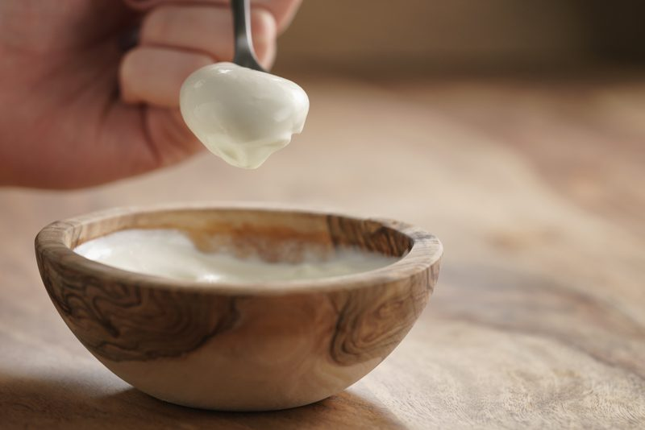

The Value of Tasting as You Go
Taste testing while creating a recipe is crucial. If “taste testing” were an actual ingredient it would be pegged as the most important one of all time. The reason behind this is because you will be using fresh foods which are not artificially altered by food manufacturers. The flavor of your fruits and veggies can vary from carrot to carrot and from apple to apple. It all depends on the quality of your produce, when it was harvested, and if it is at peak ripeness.

I always find myself saying, “The end taste of a recipe is only as good as the beginning taste of each ingredient used.” Recipes are not a place to hide food that lacks flavor or nutrients. Before you start to combine ingredients, taste test them individually. Using natural ingredients can and often do create different results! Pay close attention to the consistency, color, smell, texture, and flavor that you are working with as you go along.
Their level of freshness, ripeness (if produce), and their overall quality will either leave you with a recipe of success or one of a disaster. For example, if you plan on making raw applesauce, and the apples you are using are mealy and lack flavor so will your applesauce.
The same principle should be used throughout the recipe creating process. Even if you are following another chef’s recipe, you should taste test along the way. Your ingredients may not be fresh which will affect the flavor, or your taste buds might run a bit different than the person who designed the dish that you are constructing. My sweet tooth may not be as strong as yours, and you might need to add a little extra sweetener to be satisfied. Or it may be the other way around.
I remember as a little child being taught how to be careful when carrying a fork or a spoon to the table. I was never to run with it. I could poke my eye out, so I was told. But I was never taught to use the spoon as my main culinary tool when it comes to creating dishes. This lesson ought to be taught from the get-go if you ask me.

So don’t forget to keep some extra spoons or forks on hand while working in the kitchen. It’s best to avoid double-dipping during your taste testing process. The habits that you learn and develop in the privacy of your own home, often get carried out into the “real world.” I bought a bunch of extra spoons from the second-hand store for twenty-five cents a piece just for this very purpose. I hope you found this information valuable. Kitchen string blessings, amie sue
© AmieSue.com